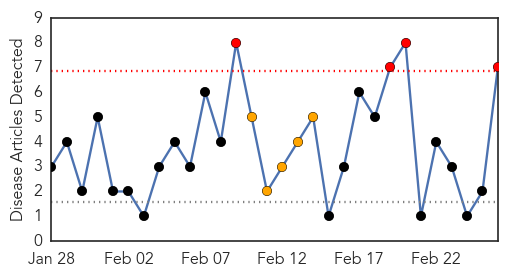
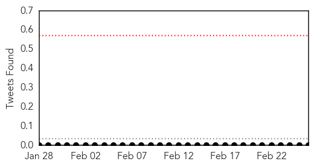
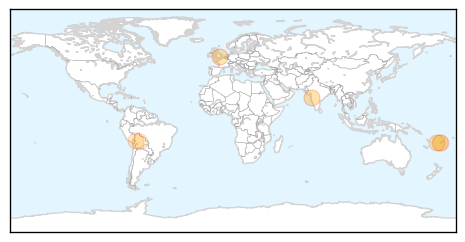
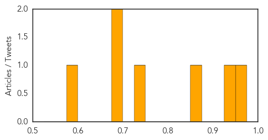
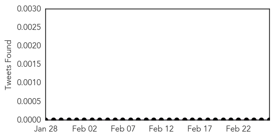

Dengue Fever
30-Day Web Trend
4 alerts, 5 warnings

30-Day Twitter Trend
0 alerts, 0 warnings

Article Locations
Article Confidences
Top Articles:
- 0.966
- Nine cases of dengue in Pune
- 0.931
- Health issues on the rise for business travellers
- 0.858
- FBC News
- 0.741
- Fiji Times Online
- 0.696
- Dengue fever cases to increase
- 0.693
- IFRC supports livelihood recovery, immediate health, hygiene and water and sanitation needs after floods in Bolivia - Bolivia (Plurinational State of)
- 0.584
- Nearly 60,000 Households Affected by Bolivian Floods
Top Tweets:
-
No tweets found for Feb 26, 2014
Mumps
30-Day Web Trend
6 alerts, 0 warnings

30-Day Twitter Trend
0 alerts, 0 warnings

Article Locations

Article Confidences

Top Articles:
-
No articles found for Feb 26, 2014
Top Tweets:
-
No tweets found for Feb 26, 2014